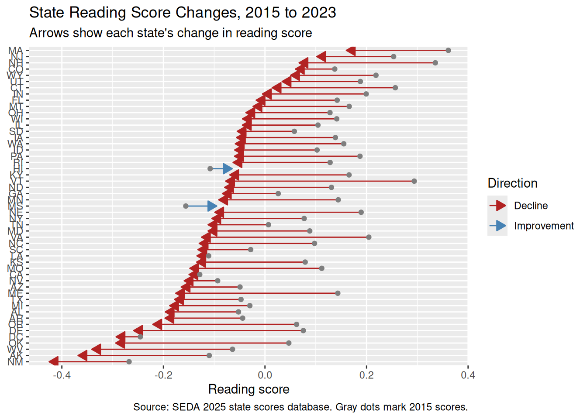

duckdb keeps downloaded extensions and secrets in a temporary directory:
ℹ /tmp/Rtmp2iMhkS/duckdb
This is removed when the R session ends.
• Extensions are re-downloaded each session.
• Secrets are lost.
ℹ Run duckdb(shared_home = TRUE) (or create ~/.duckdb) to keep them (suitable for most users).
ℹ Run duckdb(shared_home = FALSE) to accept the temporary directory (and silence this message).
ℹ See ?duckdb_storage for details and alternatives.Analyzing School Districts and Americans’ Time Use
# A tibble: 51 × 2
stateabb rla_change
<chr> <dbl>
1 VT -0.371
2 OK -0.341
3 DE -0.334
4 VA -0.330
5 ME -0.319
6 NE -0.288
7 OR -0.283
8 WV -0.277
9 NH -0.268
10 MO -0.260
# ℹ 41 more rows


duckdb keeps downloaded extensions and secrets in a temporary directory:
ℹ /tmp/Rtmp2iMhkS/duckdb
This is removed when the R session ends.
• Extensions are re-downloaded each session.
• Secrets are lost.
ℹ Run duckdb(shared_home = TRUE) (or create ~/.duckdb) to keep them (suitable for most users).
ℹ Run duckdb(shared_home = FALSE) to accept the temporary directory (and silence this message).
ℹ See ?duckdb_storage for details and alternatives.# A query: ?? x 7
# Database: DuckDB 1.5.5 [unknown@Linux 6.8.0-1052-azure:R 4.6.1//workspaces/r4ds-3/data/atus.duckdb]
tucaseid year sex age employment_status day_type weight
<chr> <dbl> <chr> <dbl> <chr> <chr> <dbl>
1 20031211030580 2003 Female 51 Employed Weekend/Holiday 1946642.
2 20031211030582 2003 Female 42 Employed Weekend/Holiday 733565.
3 20031211030583 2003 Female 29 Employed Weekday 1564950.
4 20031211030586 2003 Female 32 Unemployed Weekend/Holiday 1590674.
5 20031211030589 2003 Female 18 Employed Weekend/Holiday 3194077.
6 20031211030591 2003 Male 19 Not in labor force Weekday 7953182.
7 20031211030592 2003 Male 71 Not in labor force Weekday 3652015.
8 20031211030595 2003 Female 64 Not in labor force Weekday 6259173.
9 20031211030597 2003 Female 59 Employed Weekend/Holiday 938052.
10 20031211030598 2003 Female 79 Not in labor force Weekday 3594717.
# ℹ more rows# A tibble: 426 × 6
activity_code major_code major_name sub_code sub_name detail_code
<int> <int> <chr> <int> <chr> <int>
1 10101 1 Personal Care Activit… 1 Sleeping 1
2 10102 1 Personal Care Activit… 1 Sleeping 2
3 10199 1 Personal Care Activit… 1 Sleeping 99
4 10201 1 Personal Care Activit… 2 Grooming 1
5 10299 1 Personal Care Activit… 2 Grooming 99
6 10301 1 Personal Care Activit… 3 Health-… 1
7 10399 1 Personal Care Activit… 3 Health-… 99
8 10401 1 Personal Care Activit… 4 Persona… 1
9 10499 1 Personal Care Activit… 4 Persona… 99
10 10501 1 Personal Care Activit… 5 Persona… 1
# ℹ 416 more rows# A tibble: 3 × 2
table rows
<chr> <dbl>
1 activities 4880021
2 respondents 252808
3 activity_codes 426# A tibble: 18 × 2
major_name n
<chr> <dbl>
1 Traveling 938689
2 Personal Care Activities 918822
3 Socializing, Relaxing, and Leisure 790847
4 Household Activities 727667
5 Eating and Drinking 502207
6 Caring For & Helping Household (HH) Members 253668
7 Work & Work-Related Activities 220556
8 Consumer Purchases 169585
9 Sports, Exercise, & Recreation 64917
10 Caring For & Helping Nonhousehold (NonHH) Members 57865
11 Telephone Calls 54314
12 Data Codes 49832
13 Religious and Spiritual Activities 41466
14 Education 28665
15 Volunteer Activities 28260
16 Professional & Personal Care Services 24728
17 Household Services 6288
18 Government Services & Civic Obligations 1645Warning: Missing values are always removed in SQL aggregation functions.
Use `na.rm = TRUE` to silence this warning
This warning is displayed once every 8 hours.# A tibble: 18 × 2
major_name average_duration_min
<chr> <dbl>
1 Work & Work-Related Activities 180.
2 Personal Care Activities 159.
3 Education 131.
4 Socializing, Relaxing, and Leisure 95.5
5 Volunteer Activities 82.1
6 Sports, Exercise, & Recreation 77.0
7 Religious and Spiritual Activities 75.0
8 Data Codes 60.1
9 Professional & Personal Care Services 47.5
10 Government Services & Civic Obligations 46.7
11 Household Activities 42.8
12 Caring For & Helping Nonhousehold (NonHH) Members 41.0
13 Consumer Purchases 36.8
14 Household Services 36.6
15 Eating and Drinking 34.0
16 Telephone Calls 34.0
17 Caring For & Helping Household (HH) Members 31.6
18 Traveling 18.7# A tibble: 6 × 3
sex employment_status n
<chr> <chr> <dbl>
1 Female Employed 78566
2 Male Not in labor force 30349
3 Female Not in labor force 56492
4 Male Employed 76716
5 Female Unemployed 5747
6 Male Unemployed 4938# A tibble: 22 × 2
year n
<dbl> <dbl>
1 2003 20720
2 2004 13973
3 2005 13038
4 2006 12943
5 2007 12248
6 2008 12723
7 2009 13133
8 2010 13260
9 2011 12479
10 2012 12443
# ℹ 12 more rows# A tibble: 269,718 × 4
tucaseid sex major_name minutes
<chr> <chr> <chr> <dbl>
1 20030100015986 Female Eating and Drinking 70
2 20030100015986 Female Traveling 125
3 20030100015986 Female Household Activities 95
4 20030100015986 Female Socializing, Relaxing, and Leisure 378
5 20030100015986 Female Telephone Calls 30
6 20030101030598 Female Eating and Drinking 150
7 20030101030598 Female Household Activities 75
8 20030101030598 Female Traveling 105
9 20030101030598 Female Socializing, Relaxing, and Leisure 335
10 20030101030813 Female Household Activities 30
# ℹ 269,708 more rows# A tibble: 36 × 3
sex major_name mean_minutes
<chr> <chr> <dbl>
1 Female Caring For & Helping Household (HH) Members 167.
2 Female Caring For & Helping Nonhousehold (NonHH) Members 94.2
3 Female Consumer Purchases 65.3
4 Female Data Codes 82.6
5 Female Eating and Drinking 69.6
6 Female Education 366.
7 Female Government Services & Civic Obligations 53.3
8 Female Household Activities 198.
9 Female Household Services 45.9
10 Female Personal Care Activities 594.
# ℹ 26 more rows# A tibble: 144 × 4
sex hour major_name avg_min
<chr> <dbl> <chr> <dbl>
1 Female 10 Socializing, Relaxing, and Leisure 94.7
2 Female 23 Personal Care Activities 220.
3 Male 9 Socializing, Relaxing, and Leisure 116.
4 Male 14 Socializing, Relaxing, and Leisure 122.
5 Female 6 Socializing, Relaxing, and Leisure 84.1
6 Female 11 Household Activities 41.5
7 Female 18 Household Activities 31.3
8 Female 12 Caring For & Helping Household (HH) Members 36.2
9 Female 14 Household Activities 41.9
10 Female 15 Socializing, Relaxing, and Leisure 86.1
# ℹ 134 more rows